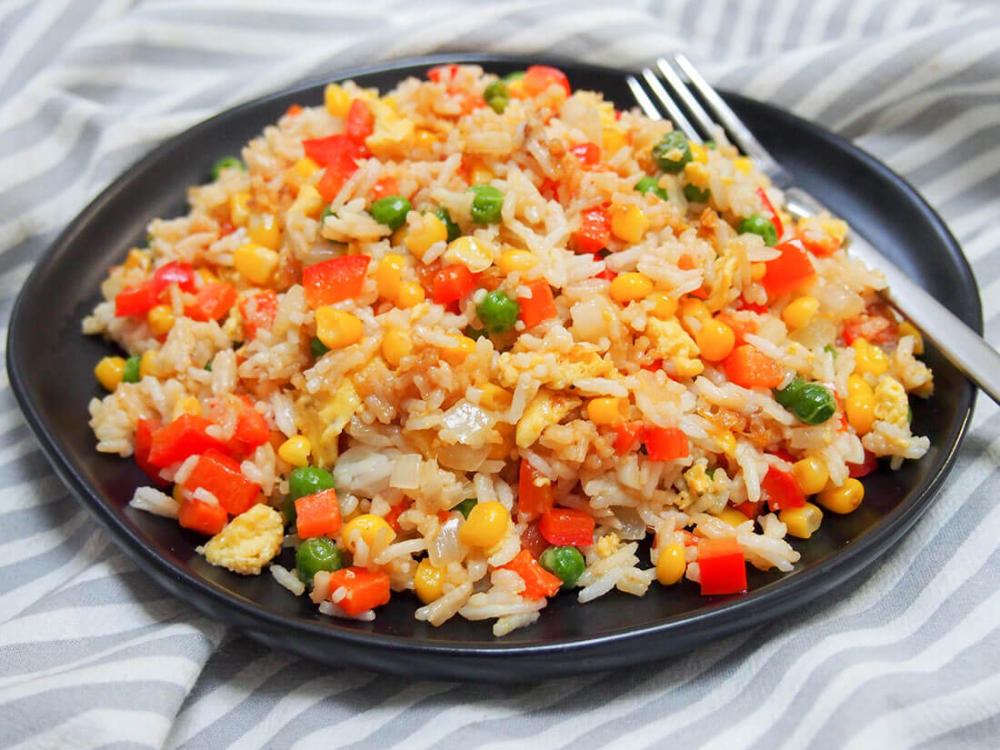

Fried rice is a staple of Asian cuisine, celebrated for its comforting warmth, savory aroma, and brilliant utilization of simple ingredients. At its foundation is cooked rice, ideally day-old and chilled, which is stir-fried at high heat in a wok to ensure the grains dry out and absorb flavors without becoming mushy. This rice is rapidly tossed with aromatics like garlic, ginger, and scallions, alongside a colorful medley of finely diced vegetables like peas, carrots, and corn. Savory liquids, primarily soy sauce and sesame oil, coat each grain, while a beaten egg is typically scrambled directly into the pan to add a rich, soft texture to the dish.
The true brilliance of fried rice lies in its ultimate flexibility as a culinary canvas and its status as the world's best vehicle for leftovers. Virtually any protein can be incorporated, from classic diced ham, shrimp, and chicken to succulent Chinese barbecue pork (char siu) or crispy tofu. Different cultures have developed distinct, iconic versions, such as Indonesia's sweet and spicy Nasi Goreng, Thailand’s fragrant pineapple fried rice, and Latin America's fusion arroz chaufa. This incredible adaptability makes fried rice a universally loved, quick-cooking meal that transforms basic kitchen staples into a deeply satisfying, cohesive feast.